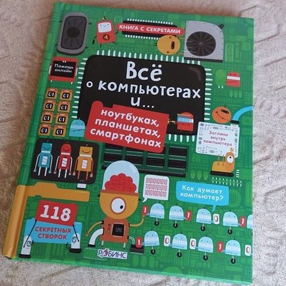
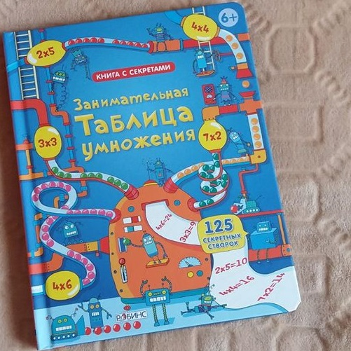

"Спи міцно, моє будівництво" - Шеррі Даскі Рінкер та Том Ліхтенгелд
Вечером все машинки на строительной площадке заканчивают свои важные дела и готовятся ко сну. А с ними и Ваш малыш :-) Я долго думала покупать эту книгу или нет. Не смотря на её огромную популярность, попадались и отзывы что она совершенно обычная и детей никак не зацепила. Но любовь сынули к строительной технике была столь высока, и 90% отзывов были настолько восторженными, что я решила рискнуть. И в итоге с 1,7 лет мы больше трех месяцев не ложились спать без этой книги. Приходилось даже прятать. Я до сих пор помню её наизусть :-) Страсти улеглись где-то после двух. Но мы нашли новый "засыпательный" хит
Стихи, 1-3 лет, Книга перед сном
"Всё о компьютерах и ... ноутбуках, планшетах, смартфонах" - изд. Робинс

Недавно к нам приехала новая книга от Usborne (в переводе издательства Робинс). Всё о компьютерах и ноутбуках, планшетах, смартфонах. Я бы рекомендовала её младшим школьникам - 6-10 лет. Хотя мы с сыном (4,10) уже начали её читать, но многое ему ещё не понятно. Книга красочная и очень интересная. Объясняет коротко основные понятия о компьютерах, программировании, интернете.
Познавательное, 6-12 лет, Книги с окошками
"Занимательная таблица умножения" - изд. Робинс

Учим таблицу умножения весело с очередным шедевром от Usborne (в переводе издательства Робинс). Я в своё время могла только мечтать о такой книге, когда учила унылую таблицу на обороте школьной тетрадки... И когда увидела её - не смогла устоять :-) Купили когда Жене было три - на вырост. С планами использовать в школе. Сейчас он сам достает Таблицу умножения раз в неделю, и открывая окошки читает в слух - "шесть умножить на три - будет восемнадцать". Действительно умножать он ещё не умет, пока только складывает хорошо, отнимает хуже. Но она на столько крутая, что я понимаю почему он её "читает" :-) Книга отличного качества, плотный картон, "не бумажные", а плотные окошки.